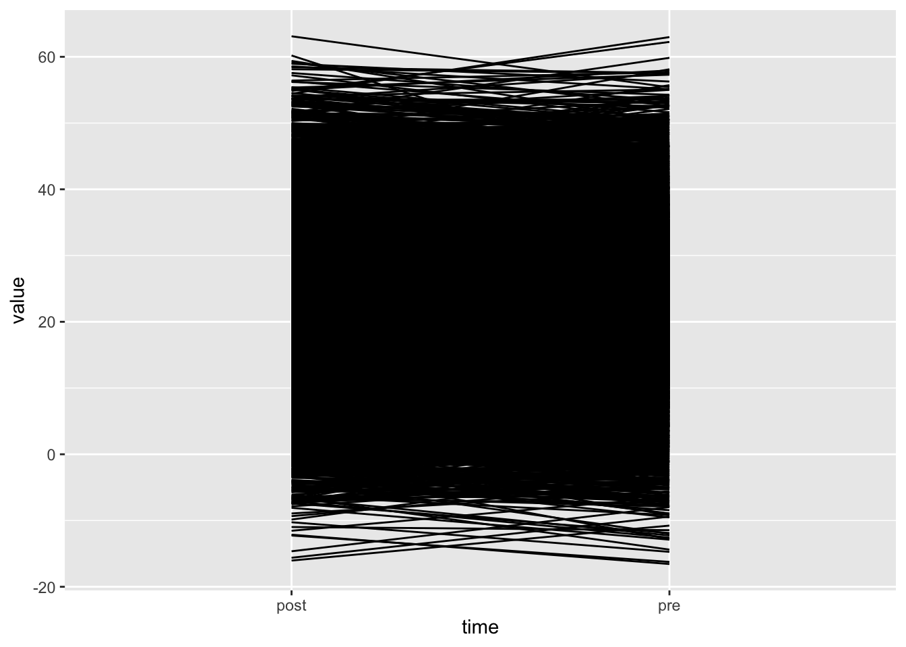
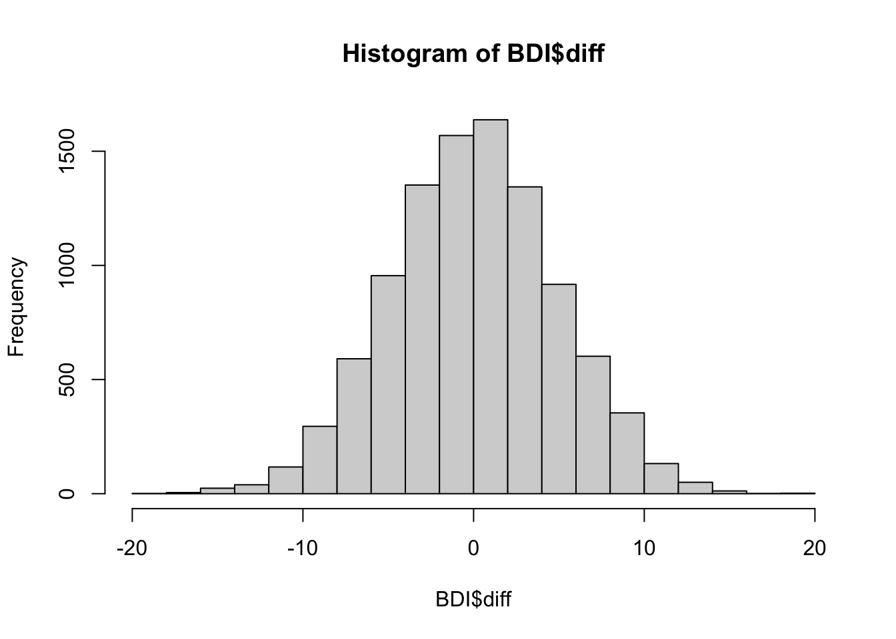
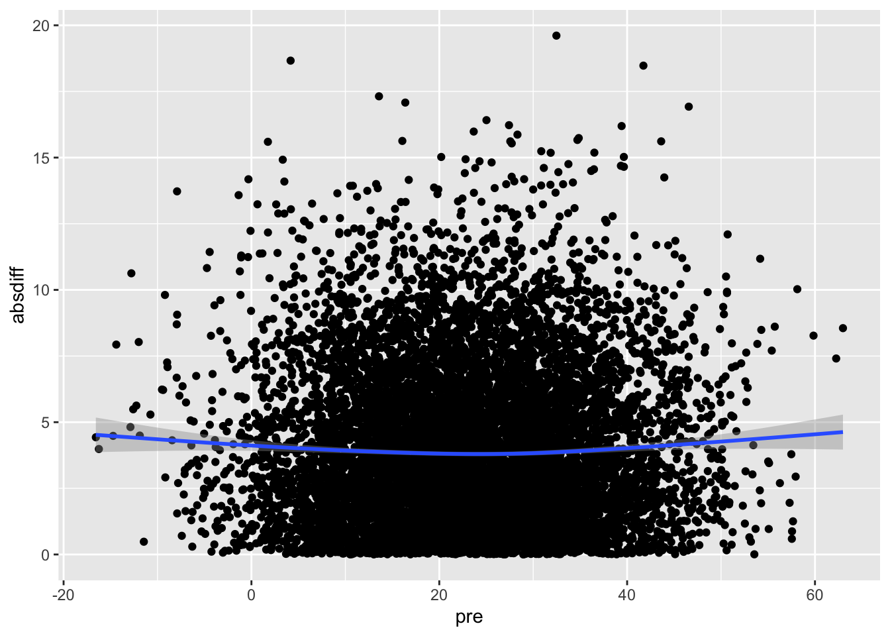
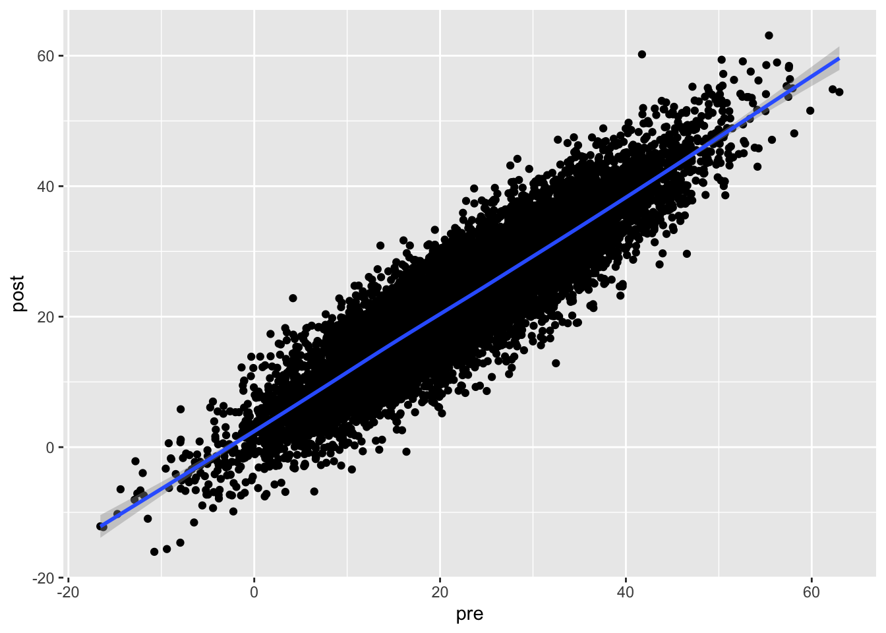
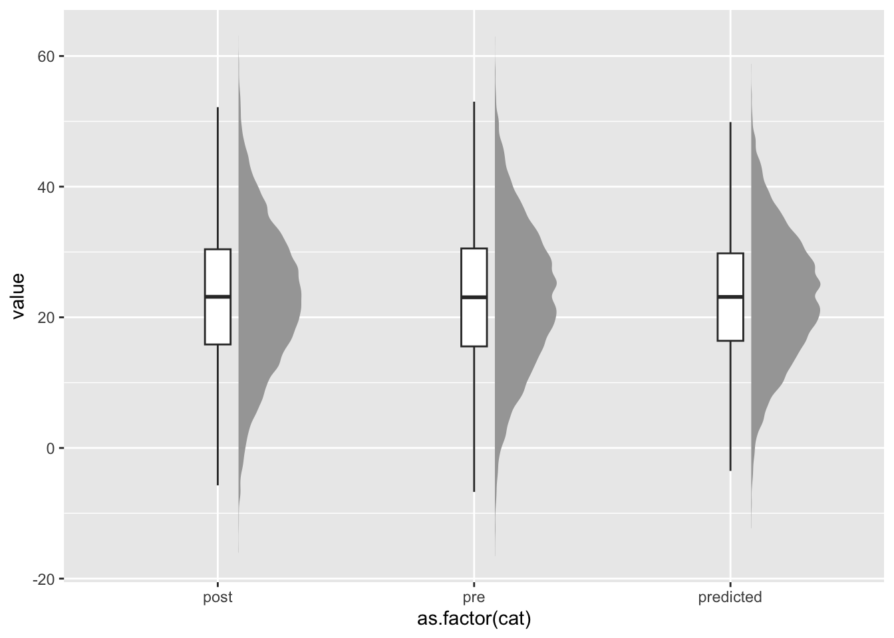

Loading required package: RcppLoading required package: ziggLoading required package: RcppParallel
Attaching package: 'RcppParallel'The following object is masked from 'package:Rcpp':
LdFlags
Rfast: 2.1.5.2 ___ __ __ __ __ __ __ __ __ __ _ _ __ __ __ __ __ __ __ __ __ __ __
| __ __ __ __ | | __ __ __ __ _/ / \ | __ __ __ __ / /__ __ _ _ __ __\
| | | | | | / _ \ | | / /
| | | | | | / / \ \ | | / /
| | | | | | / / \ \ | | / /
| |__ __ __ __| | | |__ __ __ __ / / \ \ | |__ __ __ __ _ / /__/\
| __ __ __ __| | __ __ __ __| / /__ _ __\ \ |_ __ __ __ _ | / ___ /
| \ | | / _ _ _ _ _ _ \ | | \/ / /
| |\ \ | | / / \ \ | | / /
| | \ \ | | / / \ \ | | / /
| | \ \ | | / / \ \ | | / /
| | \ \__ __ _ | | / / \ \ _ __ __ __ _| | / /
|_| \__ __ __\ |_| /_/ \_\ /_ __ __ __ ___| \/ teamn <- 10000
pre_post_cor <- 0.9
mu <- c(23, 23)
sigma <- matrix(
c(
117,
pre_post_cor * sqrt(117) * sqrt(117),
pre_post_cor * sqrt(117) * sqrt(117),
117
),
nrow = 2,
byrow = TRUE
)
BDI <- rmvnorm(n, mu, sigma) |> data.frame()
xi <- rnorm(n, mean = 23, sd = sqrt(117))
pre <- 1 * xi + rnorm(n, mean = 0, sd = 2)
post <- 1 * xi + rnorm(n, mean = 0, sd = 2)
cor(pre, post)[1] 0.966857colMeans(BDI) X1 X2
23.01149 22.88568 var(BDI) X1 X2
X1 117.2009 105.8076
X2 105.8076 117.2722
Call:
lm(formula = post ~ pre, data = BDI)
Residuals:
Min 1Q Median 3Q Max
-18.5125 -3.1055 0.0218 3.1173 17.4446
Coefficients:
Estimate Std. Error t value Pr(>|t|)
(Intercept) 2.111180 0.109564 19.27 <2e-16 ***
pre 0.902788 0.004308 209.54 <2e-16 ***
---
Signif. codes: 0 '***' 0.001 '**' 0.01 '*' 0.05 '.' 0.1 ' ' 1
Residual standard error: 4.664 on 9998 degrees of freedom
Multiple R-squared: 0.8145, Adjusted R-squared: 0.8145
F-statistic: 4.391e+04 on 1 and 9998 DF, p-value: < 2.2e-16

mean(BDI$diff)[1] -0.125814
Call:
lm(formula = diff ~ pre, data = BDI)
Residuals:
Min 1Q Median 3Q Max
-18.5125 -3.1055 0.0218 3.1173 17.4446
Coefficients:
Estimate Std. Error t value Pr(>|t|)
(Intercept) 2.111180 0.109564 19.27 <2e-16 ***
pre -0.097212 0.004308 -22.56 <2e-16 ***
---
Signif. codes: 0 '***' 0.001 '**' 0.01 '*' 0.05 '.' 0.1 ' ' 1
Residual standard error: 4.664 on 9998 degrees of freedom
Multiple R-squared: 0.04845, Adjusted R-squared: 0.04836
F-statistic: 509.1 on 1 and 9998 DF, p-value: < 2.2e-16ggplot(BDI, aes(x = pre, y = absdiff)) + geom_point() + geom_smooth()`geom_smooth()` using method = 'gam' and formula = 'y ~ s(x, bs = "cs")'
ggplot(BDI, aes(x = pre, y = post)) + geom_point() + geom_smooth()`geom_smooth()` using method = 'gam' and formula = 'y ~ s(x, bs = "cs")'
[1] 22.88568var(BDI$predicted)[1] 95.52184# The predicted values have the same mean (so no systematic treatment effect, as expected)
# but much smaller variance:
BDI_long2 <- pivot_longer(BDI, c(pre, post, predicted), names_to = "cat")
library(ggplot2)
ggplot(BDI_long2, aes(x = as.factor(cat), y = value)) +
ggdist::stat_halfeye(
adjust = .5,
width = .3,
.width = 0,
justification = -.3,
point_colour = NA
) +
geom_boxplot(width = .1, outlier.shape = NA) +
ggdist::stat_dots(side = "left", scale = .4, alpha = .5)